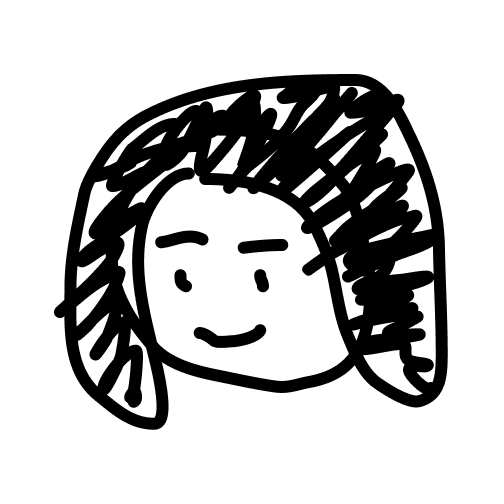

I'm Yanyi
I'm a designer (artist). I feel the world and humbly put a piece of mine. That's the journey I go, with the flow of heart and mind.
I was born and raised in China. I finished my higher education and worked in between in several EU countries. I reside in Germany for more inspiration now.
I’m obsessed on uncovering pattern, through reading, observing, experiencing and making. I don't have standard work approach but I like blending art and science for mess & fun. Recently, my work more focuses on how to scale design (and designer) in bigger complex system.
This website is a silent corner where I post recent fun works which reflect and fluidly shape who I am as a designer in the passing years.
Due to NDA, please contact me for CV, and case studies
of
commercial projects, if you are interested.